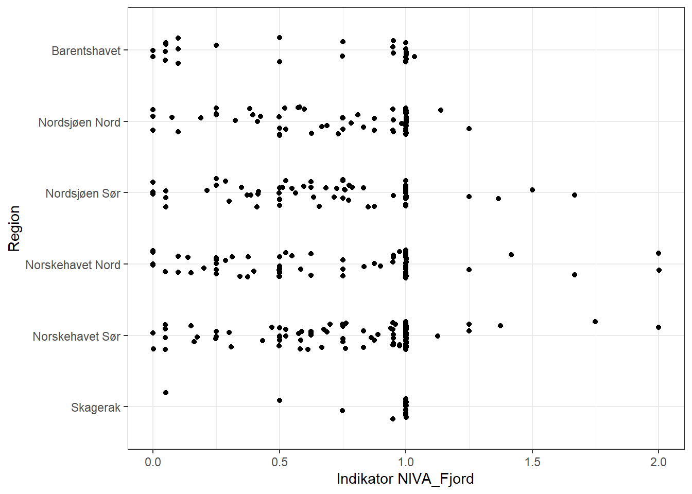

Code
dat <- read_csv(
here("data/NIVA_fjord/regulerte_elver_kyst.csv"),
show_col_types = FALSE
)
cat("Number of rows:", nrow(dat), "\n")Number of rows: 729 NiVA_Fjord
dat <- read_csv(
here("data/NIVA_fjord/regulerte_elver_kyst.csv"),
show_col_types = FALSE
)
cat("Number of rows:", nrow(dat), "\n")Number of rows: 729 by_vannforekomst <- dat %>%
mutate(
andel_qnormal_klasse = andel_qnormal_klasse / 100
) %>%
group_by(
vannforekomstid,
okoregion
) %>%
summarise(
andel_qnormal_klasse = mean(andel_qnormal_klasse),
.groups = "drop"
)
cat("Number of rows:", nrow(by_vannforekomst), "\n")Number of rows: 380 by_vannforekomst <- by_vannforekomst %>%
filter(okoregion != "")
cat("Number of rows:", nrow(by_vannforekomst), "\n")Number of rows: 379 ggplot(by_vannforekomst, aes(x = fct_rev(okoregion), y = andel_qnormal_klasse)) +
geom_jitter(width = 0.2) +
coord_flip() +
labs(
x = "Region", y = "Indikator NIVA_Fjord"
) +
theme_bw()
n_ecoregion <- table(by_vannforekomst$okoregion)
weights_tbl <- data.frame(
okoregion = names(n_ecoregion),
w = 1 / as.numeric(n_ecoregion)
) %>%
mutate(
w = w / sum(w)
)by_vannforekomst <- by_vannforekomst %>%
left_join(
weights_tbl,
by = "okoregion"
)mod_weighted <- lm(
andel_qnormal_klasse ~ 1,
data = by_vannforekomst,
weights = w
)res_weighted <- tidy(mod_weighted)
estimate <- res_weighted$estimate
se <- res_weighted$std.errortibble(
Statistic = c(
"Weighted mean",
"Standard error"
),
Value = c(
estimate,
se
)
) %>%
mutate(
Value = round(Value, 2)
) %>%
knitr::kable()| Statistic | Value |
|---|---|
| Weighted mean | 0.75 |
| Standard error | 0.02 |
The estimated national NIVA_Fjord index was 0.75 (SE = 0.019).
The estimate was calculated as a weighted mean across water bodies, with equal total weight assigned to each ecoregion.